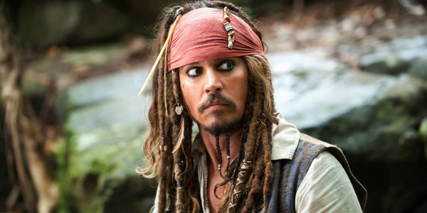

Johnny Depp

Född John Chrisopher Depp II. Som ung fick han en gitarr av sin mor som kom att bli en stor del av hans liv. När han var 15 år hoppade han av skolan för en karriär som rockartist. Han var frontfigur i en rad garageband, ett av dem var The Kids.
The Kids bytte senare namn till Six Gun Method. Nu spelar han vid sidan av filmkarriären gitarr i bandet P.
Olika händelser och årtal
- 1984 - Gör sin debutroll i skräckfilmen Nightmare on Elm Street
- 1987 - Han slår igenom som huvudrollen i tv-serien 21 Jump Street
- 1990 - Hans genombrott i film var han spelade Edward Scissorhands
- 2003 - Spelar Jack Sparrow i hit fimen Pirates of the Carrabiean
- 2003 - utsetts till "Sexiest man alive" av People Magazine
- 2005 - Han får rollen för Willy Wonka i Charlie and the Chocolate factory
- 2009 - utnämnd till den sexigaste stjärnan av America's Parade Magazine.
"I think the thing to do is enjoy the ride while you're on it."
Johnny Depp